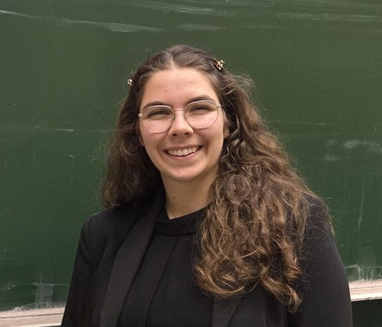

Mapping the Milky Way's cosmic rays in three dimensions
Cosmic rays shape the Milky Way, and the Milky Way shapes them. As a PhD student at RWTH Aachen, I am building a three-dimensional map of cosmic rays and their sources from γ-ray and gas data.

About my work
Cosmic rays are a key messenger of high-energy astrophysics and an important driver of feedback in the interstellar medium: they couple its smallest and largest scales, from the ionisation and chemistry of dense clouds to the driving of galactic outflows. In molecular clouds they can dominate the ionisation budget entirely. At the same time, where cosmic rays go depends on the gas and magnetic fields they travel through. I am interested in this two-way relationship: how cosmic rays shape the Milky Way, and how the Milky Way shapes them.
I approached this question from the dense end. As a student, I studied how the correlation between discrete sources and molecular clouds affects ionisation by MeV cosmic rays; my master's thesis then turned to the sources themselves, modelling shock acceleration in star-cluster wind bubbles. My PhD in Prof. Philipp Mertsch's group brings both ends together: reconstructing where cosmic rays and their sources are, in three dimensions. Within the MW-Atlas collaboration, I also contributed to a velocity-resolved 3D map of local atomic hydrogen.
Research
Three-dimensional reconstruction of cosmic-ray sources and density
Reconstructing a data-driven, three-dimensional map of the local cosmic-ray density and of the underlying distribution of galactic cosmic-ray sources, going beyond the parametric distributions assumed in many propagation models. Inferring both from Fermi-LAT γ-ray data combined with 3D maps of the interstellar gas, to provide the cosmic-ray input needed for more realistic studies of the physics inside the interstellar medium.
Cosmic-ray ionisation of molecular clouds
Studied how the spatio-temporal correlation between discrete cosmic-ray sources and molecular clouds shapes the ionisation rate from MeV cosmic rays — the dominant ionising agent in dense, partially shielded gas.
Shock acceleration in star-cluster wind bubbles
Investigated young massive star clusters as potential sources of galactic cosmic rays, modelling diffusive shock acceleration at the termination shock. Used finite-difference methods to solve the transport equation governing cosmic-ray acceleration, aiming to understand the resulting particle energy spectra and spatial distribution.
Publications
Milky Way Atlas: A radial-velocity-resolved, three-dimensional map of H I within 1.25 kpc
Cosmic-ray induced ionisation and spatio-temporal correlations between supernova remnants and molecular clouds
Experience
PhD student
Reconstructing the 3D distribution of galactic cosmic-ray sources and the local cosmic-ray density.
Student assistant
Investigated how cloud–source correlations affect the ionisation rate of molecular clouds, using stochastic models of galactic low-energy cosmic rays. Built Monte Carlo simulations in C++ and ran them on a high-performance cluster.
Research internship
Modelled diffuse gamma rays, focusing on mapping propagated gamma rays and resolving discretisation and binning issues in the simulations. Optimised code for a high-performance cluster.
Student assistant
Measured and analysed the gas gain of gas electron multipliers (GEMs) and helped maintain the detector.
Talks
mw-atlas: Towards a 3D Map of Galactic Cosmic-Ray Sources via Differentiable Transport Modelling
mw-atlas: Inferring the 3D Galactic Cosmic Ray (Source) Density of our Milky Way
Presenting the methodology and mock tests of a Bayesian reconstruction of the 3D cosmic-ray source density in the Milky Way.
mw-atlas: Inferring the 3D Galactic cosmic ray density of our Milky Way ↗
Presenting the methodology of a Bayesian reconstruction of the 3D cosmic-ray source density in the Milky Way, with an outlook on future work.
Galactic Cosmic Ray Sources
An overview of my research, from cosmic-ray ionisation rates in molecular clouds, through shock acceleration in star-cluster wind bubbles (master's thesis), to the Bayesian reconstruction of the 3D cosmic-ray (source) density in my PhD.
Shock Acceleration in Star Cluster Wind Bubbles ↗
Studying the acceleration of cosmic rays at shocks in the wind bubbles blown by massive star clusters.
Cosmic-ray induced ionisation and spatio-temporal correlations between supernova remnants and molecular clouds ↗
Addressing the cosmic-ray ionisation puzzle by modelling spatial and temporal correlations between supernova remnants and molecular clouds, and comparing the predicted ionisation rates to data.
Outreach
Physik-Projekt-Tage Aachen 2026 ↗
Organising a four-day event for female secondary-school students to promote interest in physics.

Education
M.Sc. Physics
B.Sc. Physics
Teaching & Supervision
Co-supervisor, Master's thesis
Teaching assistant
- ＊Winter 2026/27: Mathematical Methods of Physics I (upcoming)
- ＊Summer 2026: Neutron Stars, Black Holes and Ultra-High-Energy Cosmic Rays (Master's course)
- ＊Winter 2025/26: Theoretical Physics IV: Statistical Physics and Thermodynamics
- ＊Winter 2024/25: Theoretical Physics I: Classical Mechanics